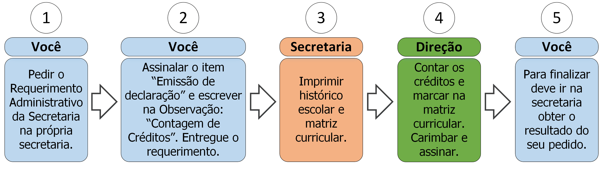

4.3 Declaração de contagem de créditos

4.3.1 Descrição
A qualquer momento (ainda antes da colação de grau) você pode solicitar uma declaração de contagem de créditos. Para isso deve seguir os seguintes passos:
- A. Peça o Requerimento Administrativo da Secretaria;
- B. Assinale o item “Emissão de declaração” e preencha no campo Observação: “Contagem de créditos”;
- C. Entregue o requerimento;
- D. A secretaria imprimirá seu histórico escolar e matriz curricular;
- E. A direção contabilizará seus créditos concluídos e não concluídos e os assinalará na matriz curricular, marcando-a;
- F. A direção assinará e carimbará a matriz curricular;
- G. Vá à secretaria e procure saber sobre o resultado do seu requerimento (ver regra 1 na seção 4.3.3).
4.3.2 Documentos necessários
Nenhum.
4.3.3 Regras
- 1. Prazo de efetivação: A Secretaria e direção têm até 5 dias úteis para emitir a declaração de contagem de créditos.